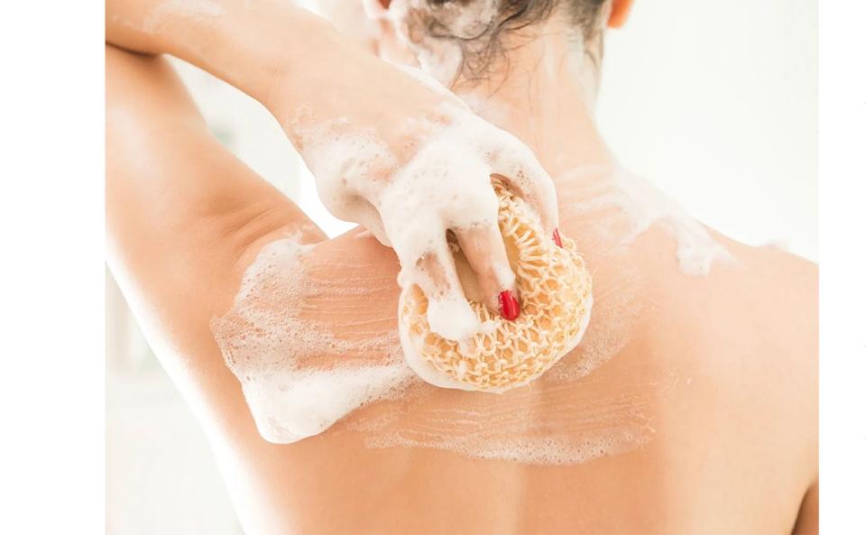
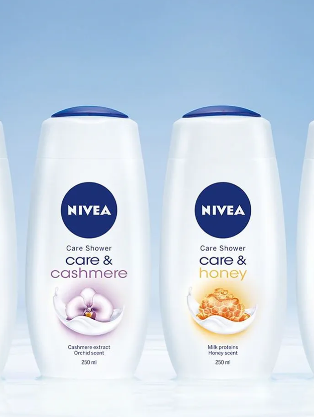

샤워를 통해 얻고자 하는 것은 사람마다 다를 수 있습니다. 어떤 스타일의 샤워를 원하는지 생각해 본다면 좀 더 효율적으로 샤워를 준비할 수 있습니다.
간단하고 효율적인 샤워
현대인들은 늘 바쁜 일상을 살아가며 언제나 무언가 해야 할 일이 있습니다. 많은 사람들에게 샤워는 우선순위가 높은 일이 아니기에, 대부분은 가능한 한 빠르고 효율적으로 하고 싶어 합니다. 샤워 시간을 줄이는 것은 당연히 가능하지만, 샤워의 목적을 달성하면서도 편안하게 샤워를 하려면 상당한 수준의 계획을 세워야 합니다. 먼저 제일 처음 해야 할 일은 샤워 제품, 칫솔, 샤워볼과 같이 필요한 용품을 모두 확실하게 준비하는 것입니다. 샤워를 중간에 멈추고 무언가를 가지러 가고 싶지는 않겠죠? 이건 소중한 시간을 낭비하는 일입니다. 따뜻한 물이 아무리 좋아도 너무 오래 즐기지 않는 것도 중요합니다. 바쁜 날에는 시간을 미리 정해 놓고 그에 맞춰서 샤워를 하는 것도 필요합니다.
완전히 느긋한 샤워로 휴식을 취하는 법
시간 제약이 없는 날에는 샤워를 하며 내몸을 좀 더 보살필 여유가 생깁니다. 조명을 어둡게 하고, 샤워 공간을 좋아하는 향으로 채운 후 긴장을 완전히 풀어 보는 건 어떠세요? 느긋한 샤워를 할 때는 진하고 매혹적인 향의 샤워 제품을 선택하는 것도 좋은 생각입니다.
느긋한 샤워는 단지 몸을 씻는 것만이 아닙니다. 걱정은 모두 잊고 오로지 ‘나를 위한 시간’을 즐기겨보세요.
몸의 긴장을 풀 시간: 느긋한 샤워
빠른 샤워를 선호하는 사람들이 있는 한 편, 샤워할 때 시간을 충분히 갖는 것을 좋아하는 사람들도 있습니다. 뜨거운 물줄기 아래에서 몸을 녹이는 것은 하루 중 기분 좋은 짧은 휴식의 시간이며, 하루의 스트레스도 완전히 날려 버릴 수 있는 순간이기도 합니다.

샤워를 준비하는 방법
좀 더 체계적인 샤워로 시간을 줄이고 싶다면, 샤워를 미리 준비하는 것이 도움이 될 것입니다. 샤워를 얼마 동안 할 것이며 이번엔 어떤 샤워를 할 것인지를 미리 정해야 샤워 중에 이리저리 움직이지 않을 수가 있습니다. 머리를 매일 감지 않는다면, 머리 감는 날을 미리 정해 놓아야 합니다. 그래야 그런 날에 샤워 시간을 좀 더 쓴 후, 허둥지둥하지 않을 수 있습니다. 스포츠를 즐기거나 피트니스 클럽에 갈 예정이신가요? 가능하다면 운동 후 샤워에 대해 미리 계획을 짜 보세요. 아침에 눈을 뜨자마자 샤워하는 것을 좋아한다면, 역시 미리 준비하고 충분한 시간도 확보해야 합니다. 샤워를 너무 서둘러 하면 오히려 스트레스를 느낄 수 있고, 하루를 기분 나쁘게 시작할 수도 있습니다.
샤워 준비를 위한 팁
- - 머리를 감지 않을 계획이라면 샤워캡을 착용하세요
- - 머리를 감을 거라면 먼저 머리를 빗질해 주세요
- - 각질을 제거해 빛나는 피부를 찾고 싶다면 바디 브러시를 전신에 사용하세요
- - 욕실을 자기에게 편안한 온도로 맞춰 두세요
- - 샤워하고 나가서 입을 옷을 미리 골라 두세요
사용할 제품 정하기
샤워하러 들어가기 전에 어떤 제품을 몸과 헤어에 사용할 것인지 미리 결정하는 것이 좋습니다. 그렇게 하면 샤워 중에 필요한 제품을 바로 손에 잡을 수 있고 어떤 순서로 움직일지가 분명해지니까요.